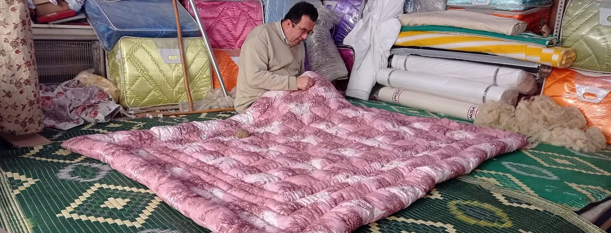

Ana sayfa / İsteğe özel üretim
Ölçüsü, dolgusu, rengi sizden; dikişi ustadan.
Her ürünü yün, pamuk ve silikondan ölçünüze göre dikiyoruz. Standart dışı yatak için yorgan, sedir ve yer minderi, yer döşeği, balkon perdesi… Formu doldurun, talebiniz WhatsApp'tan ya da e-postayla ustaya gitsin; fiyatı ve teslim gününü size söylesin.

Dört adımda siparişiniz
Talebi gönderin
Ölçü, dolgu, kumaş ve renk tercihinizi forma yazın.
Usta arar
Kumaş ve renk stoğa göre birlikte seçilir, fiyat ve teslim günü netleşir.
Dükkânda dikilir
Dolgu serilir, yüz kapatılır, dikilir; döşekler düğümlenir.
Teslim
Dükkândan alın, Korkuteli'de elden teslim edelim ya da kargoya verelim.


Sık sorulanlar
Hangi ölçülerde dikiyorsunuz?
Standart ölçülerin yanında istediğiniz en ve boyda yorgan, yastık, döşek ve minder dikilir.
Hangi dolguları kullanıyorsunuz?
Yorgan, yastık ve döşek yün, pamuk, silikon, boncuk silikon ya da elyaftan; döşek ve minder ayrıca süngerden yapılır. Dolguyu birlikte seçeriz.
Balkon perdesi de dikiyor musunuz?
Evet. Balkon perdesi çizgili dış mekân kumaşından ölçünüze göre dikilir; eni ve yüksekliği yazmanız yeterli.
Kişiye özel ürün iade edilir mi?
Ölçünüze ve isteğinize göre üretilen ürünler cayma hakkı kapsamında değildir (Mesafeli Sözleşmeler Yönetmeliği md.15). Bu yüzden ölçü, dolgu, renk ve desen siparişten önce birlikte netleşir.
Ne kadar sürede hazır olur?
İş yoğunluğuna ve ürüne göre değişir; usta size kesin günü söyler. Düğün sezonunda erken sipariş önerilir.